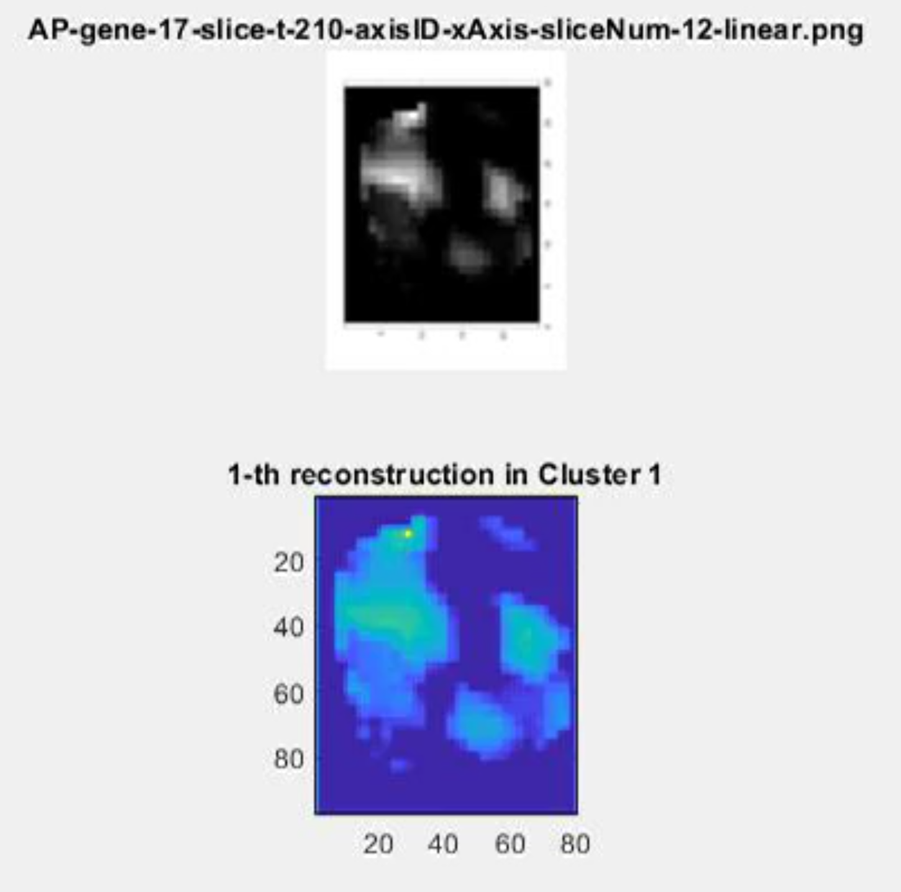

Introduction
Video Gallery
(current)
Figures
Contact Us
Supplementary_movie_01 Generation of 3-dimensional Voronoi diagram
Supplementary_movie_02 Prediction of cell position along A-P axis lineage informed
Supplementary_movie_03 Prediction of cell position along L-R axis lineage informed
Supplementary_movie_04 Prediction of cell position along V-D axis lineage informed
Supplementary_movie_05 Spatiotemporal alignment of embryo samples
Supplementary_movie_06 Histological sectioning of virtual embryo to generate gene expression pattern images
Supplementary_movie_07 Central section of virtual embryo in time course to generate gene expression pattern images
Supplementary_movie_08 Identification of direct cell-cell interaction relationships in cellular network generated from Voronoi diagram (4-14 cells, pre-gastrulation stage)
Supplementary_movie_08 Identification of direct cell-cell interaction relationships in cellular network generated from Voronoi diagram (15-26 cells, beginning of gastrulation)
Supplementary_movie_08 Identification of direct cell-cell interaction relationships in cellular network generated from Voronoi diagram (88-91 cells, gastrulation)
Supplementary_movie_08 Identification of direct cell-cell interaction relationships in cellular network generated from Voronoi diagram (259-273 cells, gastrulation)
Supplementary_movie_08 Identification of direct cell-cell interaction relationships in cellular network generated from Voronoi diagram (344-355 cells, bean stage)
Supplementary_movie_09 Lineage tracing of one cell and its direct interacting cells over time course
Supplementary_movie_10 Biometrics analysis of neural progenitor cell population development
Supplementary_movie_11 Biometrics analysis of muscle progenitor cell population in development
Supplementary_movie_12 Biometrics analysis of pharynx progenitor cell population in development
Supplementary_movie_13 Biometrics analysis of hypodermis and neural progenitor cell population in development
Supplementary_movie_14 Biometrics analysis of neural and excretory progenitor cell population in development
Supplementary_movie_15 Biometrics analysis of intestine progenitor cell population in development
Supplementary_movie_17 Histological sectioning of virtual embryo to generate anatomy pattern images along A-P axis
Supplementary_movie_18 Histological sectioning of virtual embryo to generate anatomy pattern images along L-R axis
Supplementary_movie_19 Histological sectioning of virtual embryo to generate anatomy pattern images along V-D axis
Supplementary_movie_20 Central section of tissue boundary pattern in time course, along A-P axis
Supplementary_movie_21 Central section of tissue boundary pattern in time course, along L-R axis
Supplementary_movie_22 Central section of tissue boundary pattern in time course, along V-D axis
Supplementary_movie_23 Gene expression pattern images in each of the 20 clusters, A-P axis, middle body part
Supplementary_movie_24 Gene expression pattern images in each of the 20 clusters, A-P axis, lower body part

Supplementary_movie_25 Gene expression pattern images in each of the 20 clusters, A-P axis, upper body part
Supplementary_movie_26 Prediction of cell position along A-P axis
Supplementary_movie_27 Prediction of cell position along L-R axis
Supplementary_movie_28 Prediction of cell position along V-D axis
Supplementary_movie_29 Biometrics analysis of hypodermis progenitor cell population in development
Supplementary_movie_30 Biometrics analysis of germ progenitor cell in development